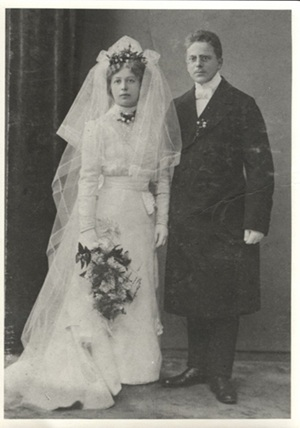

Czesława f. Ławniczak (* 10 juli 1892, 6 november 1972) och Marcin Matuszak (* 1889, † okänt) gifte sig och fick tillsammans 2 barn: Kazimierz och Halina (* 30 augusti 1916, † 30 mars 1986). Marcin försvann som soldat under första världskriget och kom aldrig tillbaka - ingen visste vad som hade hänt honom. Till slut fick han dödförklaras.
Det fanns spekulationer om att Marcin egentligen inte hade dött under första världskriget, utan att han av någon anledning i hemlighet hade hållit sig borta och dog 1942.
Senare gifte Czesława om sig och fick efternamnet Pypłowska samt även dottern Krystyna (* 13 juni 1934, † 26 augusti 2014).
